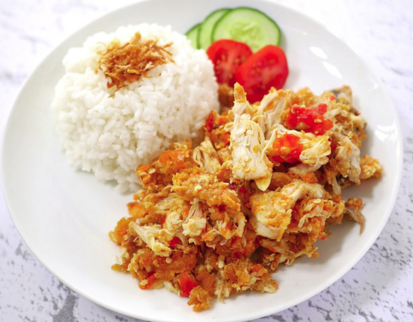

Nasi Ayam Geprek Recipe
Today, we going to make a good old overrated food in malaysia called Nasi Ayam Geprek
Ingredients
Crispy Chicken
- 500g chicken pieces (thighs, drumsticks, or breast)
- 1 tbsp lime juice
- 1 egg (beaten)
- 1.5 to 2 cups seasoned crispy frying flour (e.g., Tepung Bestari)
- Cold water (for double-dipping)
- Cooking oil for deep frying
Sambal Geprek
- 10 to 15 red bird's eye chilies (adjust to taste)
- 3 large red chilies
- 2 to 3 shallots
- 4 cloves garlic
- 1 tomato
- Salt, sugar, and seasoning powder (chicken or mushroom bouillon)
- Juice of 1 lime
- 2 tbsp hot oil (from the chicken frying pan)
To Serve: Steamed white rice, sliced cucumbers, lettuce or cabbage, and fried tofu/tempeh.
Instructions
- Marinate & Coat: Rub chicken with lime juice and rest for 10 minutes. Dip in beaten egg, then coat in seasoned flour. For extra crunch, quickly dip the floured chicken into cold water and coat in flour a second time.
- Fry:Deep-fry in hot oil over medium heat until golden brown and crispy. Drain on paper towels.
- Prepare the sambal:Lightly fry the chilies, shallots, and garlic in a little oil until soft, adding the tomato right at the end. Transfer to a mortar and pestle (lesung batu), pound coarsely with salt, sugar, and seasoning powder, then pour 2 tbsp of hot frying oil and lime juice over the top.
- Smash and serve:Place the crispy chicken onto the mortar with the sambal and smash (geprek) it firmly with the pestle so the spicy oil infuses the meat. Serve immediately with hot rice and fresh sides.
back to home